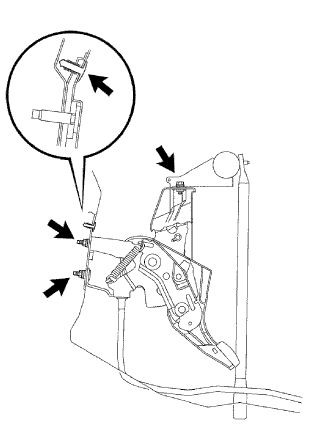

Make the rear seat Batsuku in an advance.
 |
Remove the clip of the two bolts mounting part.
 |
Turn over the rear seat Batsuku cover, remove the two bolts, and remove the rear seat Batsuku ASSY.
Parking brake control pedal ASSY removal |
| 1. Battery minor Starminal Cut off |
| 2. Removable seat back ASSY removed (overall rear seat) |
Make the rear seat Batsuku in an advance.
|
Remove the clip of the two bolts mounting part.
|
Turn over the rear seat Batsuku cover, remove the two bolts, and remove the rear seat Batsuku ASSY.
| 3. Remove the rear seat cushion assemble (integrated rear seat) |
Press the lock of the front lock in the direction of the arrow in the figure to remove it.
Pass the rear seat belt through the rear seat cushion cover and pad back rubber band.
 |
Remove the hook at the rear hook at the rear seat cushion assembly, and remove the rear seat cushion assessy.
| 4. Remove the rear seat back hinge SUB-ASSY RH |
 |
Remove the bolt and remove the rear seat Batsuku hinge RH.
| 5. Rena seat back hinge SUB-ASSY LH removed (integrated rear seat) |
Remove the bolt and remove the rear seat Batsuku hinge LH.
| 6. Remove the rear seat back ASSY RH removed (rear seat split can be divided) |
| 7. Remove the rear seat back ASSY LH removed (rear seat split can be split) |
Make the rear seat Batsuku in an advance.
 |
Remove the clip of the two bolts mounting part.
|
Turn the lower part of the rear seat Batsuku cover, remove the two bolts, and remove the rear seat.
| 8. Remove the rear seat cushion asy (rear seat split can be divided) |
Lock the front side of the rear seat cushion Assy is locked by the rear seat cushion lock striker.
 |
Remove the snap ring from the rear seat back hinge RH.
Rena seat cushion Assy The right bracket is pulled out and remove the rear seat hinge RH.
 |
Remove the bolt and remove the rear -to -hing LH.
Rena seat cushion Assy rear seat hook Assy RH is drawn and the rear seat cushion Assy is removed.
Pass the rear seat belt through the rear seat cushion cover and pad back rubber band.
Remove the rear seat cushion assessy.
| 9. Remove the front seat Assy RH |
Operate the seat track adjusted handle to make the front seat Assike a rear mole.
 |
Remove the claws of the front seat leg cover and remove the two bolts on the front side.
Operate the seat track adjusted handle to make the front seat associate a front mole.
Remove the claws of the front seat leg cover and remove two bolts on the rear side.
Remove the wire harness and disconnect the connector.
Remove the front sheet Assing RH from the vehicle.
| 10. The front door scuff plate RH is removed |
 |
Pull it up by hand, remove the claws, and remove the front door skirt plate RH.
| 11. Cowl side trim board RH is removed |
 |
Remove the claws and remove the cowl side trim board.
| 12. Front door opening trim Weather strip RH is removed |
| 13. Rear seat 3 point type belt ASSY OUT RH removed (floor anka part) |
Remove the bolt and remove the rear seat 3 point type belt ASSY OUT RH.
| 14. Rapping belt Outanka cover removed |
 |
Remove the claws and remove the wrap belt Otaanca cover.
| 15. Front sheet ota -altered Assy RH removed (floor anka part) |
Remove the bolt and remove the front seat Outabelt Assy RH (floor anka).
| 16. Side No.1 Trim ASSY RH removed |
 |
Pull it in the inside of the vehicle by hand, remove the clip and claws, and remove the side N O.1 Trim ASSY RH.
| 17. Remove the front pillar garnish LWR RH |
 |
Pull up from the rear end of the vehicle and remove 5 places of claws.
Pull the back of the vehicle and remove the front pillar garnitsui LWR RH.
| 18. Remove the front pillar garnish RH |
 |
Pull the garnitsu shu in the inside of the vehicle, remove the clip, and remove the center pillar garnish RH.
| 19. Reardoors Opening Trim Weather Strip LH removed |
| 20. Pillar No.1 Garnish LH removed |
Remove the claws and remove the pillar No.1 Garnitsui LH.
| 21. Remove the front pillar garnish LH |
 |
Pull it from the upper part of the garnish to the inside of the vehicle, remove the clip, and remove the front pillar garnish LH.
| 22. Remove the front pillar garnish LWR LH |
 |
Remove the four claws and remove the front pillar garnitsui LWR LH.
| 23. Instrument cluster finish panel No.1 |
 |
Pull the instrument cluster fuinitsui panel to the rear of the vehicle, remove the eight claws, and remove the instrument cluster fuinitsui panel.
| 24. Remove the combination meter Assem |
Take off two squeegees.
Pull the combination sijon meter ASSY behind the vehicle and remove the critpo.
 |
Cut the connector and remove the combination sijon meter ASSY.
| 25. |
 |
Remove two screws <j> and remove the grab compartment door.
| 26. Instrument panel register Assy No.1 |
 |
Pull the instrument panel register Assistor ASSY No.1 to the rear of the vehicle, remove the five claws, and remove the instrument panel register ASSY No.1.
| 27. Instrument cluster finish panel SUB-ASSY CTR |
Lower the shift lever and tilt down the steering.
 |
Pull the instrument cluster foinitsu panel CTR behind the vehicle, remove the 12 claws, and remove the instrument cluster hinitsu panel CTR.
| 28. Instrument panel finish plate removed |
 |
Remove one screw <b> one, pull the instrument panel fuinitsu shiyu plate behind the vehicle, remove the four claws, and remove the instrument panel fuinitsui plate.
| 29. Instrument panel passenger airbag ASSY connector cut off |
 |
Instrument panel passenger airbag Cut the connector for ASSY.
| 30. Instrument panel W/Passenger Airbag ASSY |
Remove the cover in the grabbox, and remove the passenger airbag fixing bolt <a> from there.
Remove the screw <c> or <d> 4.

Pull the front side of the instrument panel upward, remove the seven claws, and separate the central connector and clamp.
Be careful not to damage the steering wheel ASSY, and remove the instrument panel together with passenger airbags and ducts.
Remove the screws <b> two, and remove the side defrotorste nozzle duct No.2 from the instrument panel W/ Passenger Airbag ASSY.
Remove the screws <b> two, and remove the Hita Tsugu register duct No.3 from the instrument panel W/ Passenger Airbag ASSY.
Remove the screws <b> two, and remove the side -deflo -rosuled duct No.1 from the instrument panel W/ Passenger Airbag Assy.
Remove the screws <b> two, and remove the Hita Tsugu register duct No.1 from the instrument panel W/ Passenger Airbag Assy.
| 31. Instrument panel finish panel LWR CTR removed |
 |
Clip <c> 2 places, 8 claws, and remove the instrument panel finish panel LWR CTR.
Cut the connector of the power outlet socket and remove the instrument panel finish panel LWR CTR.
Remove the three screws and remove the instrument Katsup holder.
| 32. Remove the front floor carpet ASSY FR |
From the front floor sirens pad RH to the front floor sirens paddad RH RH, turn the front floor carpet ASSY FR.
| 33. Remove the front floor silence pad RH |
| 34. Remove the floorboard No.1 |
Remove the two clips and remove the No. 1 floorboard.
| 35. The front floor silence pad SUB-ASSY RR RH is removed |
| 36. Wire gathing nut No.1 loosening |
 |
Loose the rock nut and the parking brake wire aygnut No.1 No.1 of the parking brake interview interleaver part.
| 37. Parking brake cable ASSY No.1 Cut off |
 |
Cut the parking brake cable ASSY No.2 and the parking brake cable assy No.3 from the parking brake equalizer.
Remove the clip and disconnect the parking brake cable ASSY No.1 from the parking brake interimide lever.
Remove the bolt of the clamp and separate the parking brake cable ASSY No.1 from the floor.
| 38. Parking brake control pedal ASSY is removed |
Parking Brake Switch Cut the connector of asser.
|  |
Remove two mounting nuts for the parking brake pedal ASSY from the engine room side.
Remove the upper bolt and clip and remove the parking brake pedal ASSY.
| 39. Parking brake cable ASSY No.1 removed |
 |
Remove the parking brake cable ASSY No.1 rock nut and adjasting nut from the parking brake pedal.
Parking brake cable ASSY No.1 Remove the fixed clip.
Parked claws, parking brake cable ASSY No.Remove 1.
| 40. Parking brake switch Assy removed |
Remove one screw and remove the parking brake switch ASSY.
| 41. Remove the parking pedal pad |